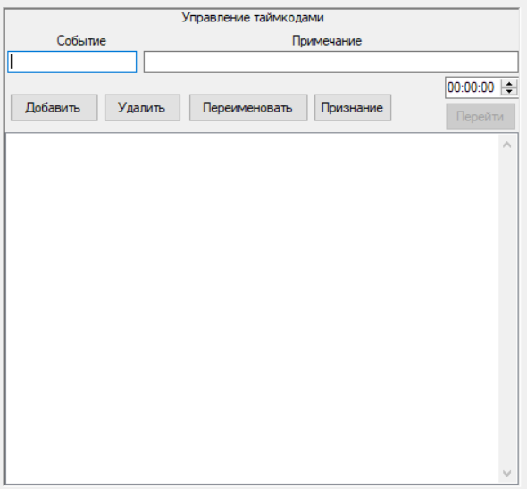
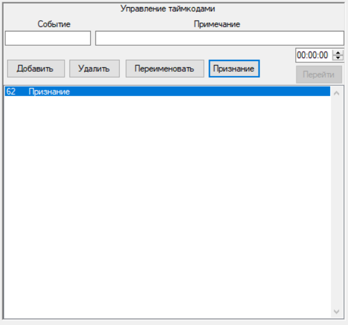

Таймкоды
Таймкоды - это отметки времени, которые позволят быстро перейти на нужный момент видео.
Функция таймкодов позволяет добавлять, удалять, переименовывать метки времени.
Таймкоды можно добавлять как во время записи, так и во время воспроизведения.
Имеется возможность скрыть окно таймкодов
Имеется возможность добавлять быстрые таймкоды, нажав на кнопку Признание
После заполнения полей Событие и Примечание необходимо нажать на кнопку Добавить
Чтобы удалить метку нужно выделить таймкод и нажать на кнопку Удалить
Чтобы переименовать метку нужно выделить таймкод, вписать необходимую информацию в поля Событие и Примечание и нажать на кнопку Переименовать
Чтобы перейти на любой другой таймкод необходимо ввести таймкод в поле 00:00:00 и нажать на кнопку Перейти
